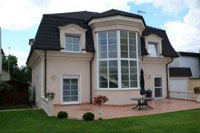
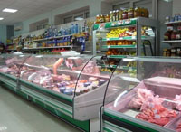
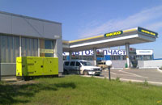

Электрогенератор как источник автономного питания
 Общие рекомендации
Общие рекомендации
Автономные источники питания — это не предмет роскоши, а скорее возможность обеспечить нормальную жизнь и работу в экстремальных условиях, которые создаются отечественными коммунальщиками. Конечно, можно судиться с поставщиками электроэнергии, писать им жалобы, насылать проклятия, ругать последними словами. Однако, как показывает практика, эффекта от этих действий не будет — напрасная трата времени и других ресурсов. В то же время, переход на автономное электроснабжение — удовольствие не из дешевых. Возможно стоит задуматься над альтернативным решением? Ведь оно уже найдено — это использование генератора.
Для начала нужно понять, сколько энергии будет потреблять оборудование, для которого приобретается альтернативный источник питания. Затем суммировать все нагрузки. Например, потребляемая мощность стационарного компьютера — от 200 до 750 Ватт, электрочайника — 1-2,5 килоВатт (кВт), кондиционера — еще 1-1,5 кВт, бойлера — 1,2-1,5 кВт, холодильника — 200-500 Ватт, телевизора — 100-400 Ватт, одной лампочки — 40-100 Ватт (энергосберегающей — 20 Ватт). А если речь идет об электропитании для аквариума или обогрева зимних садов, то тут все зависит от каждого конкретного случая — размер и мощности могут быть самыми разнообразными. В любом случае все эти цифры, как правило, указаны на самих электроприборах. По идее их сумма дает ответ на вопрос: генератор какой мощности нужно приобретать? Но и здесь есть нюанс: нормальный режим работы любого генератора — 30-70% от его номинальной мощности. Только при таких нагрузках он сможет работать продолжительное время. Не рекомендуется использовать генератор на стопроцентную мощность. Разве что в критических случаях и не более, чем на один час.
Также нельзя забывать про так называемые пусковые токи — то есть энергию, которая затрачивается на запуск конкретного электроприбора. Например, холодильник при включении может потреблять в 2-3 раза больше своей номинальной мощности. Пусковые токи бытовых приборов могут быть самыми разнообразными. И, если у пылесоса, дрели или обогревателя радиаторного типа коэффициент превышения номинальной мощности — не более 1,2, то стиральной машине, кондиционеру и бойлеру при запуске может потребоваться в 3,5 раза больше мощности. А, скажем, электромясорубка может превышать свой номинал в семикратном размере! Согласитесь, что задуматься над над перечнем электроприборов, которые стоит подключать к генератору, все-таки нужно.
Генератор для квартирыИспользовать отдельный источник питания в обыкновенной квартире находящейся в стандартном многоквартирном доме можно далеко не всегда. Нужно помнить что любой генератор — это выхлопные газы, вибрация и шум, которые могут мешать и Вам, и Вашим соседям. Силовая установка требует наличия дополнительных площадей: ее можно поставить во дворе, на открытой площадке, террасе, в гараже или пристройке (ставить генератор на балконе специалисты не советуют — бывали случаи, когда вибрация становилась причиной обрушения). Также играет роль размер выхлопной трубы — с одной стороны хочется отвести газы подальше, с другой — слишком большая труба — это излишнее сопротивление, при наличии которого генератор может отказать.
Как правило, для квартир годятся однофазные генераторы мощностью от 3 до 8 кВт с одноцилиндровым двигателем, воздушным охлаждением и всепогодным шумопоглощающим кожухом. Следует отметить, что генераторы мощностью до 5 кВт нужно запускать вручную — с помощью шнурка, накрученного на ротор. Более мощные установки имеют электростартер и могут быть укомплектованы системой автоматического запуска. То есть, когда свет отключают, генератор запускается автоматически. При появлении питания в сети, он прекращает подачу энергии, работает на холостых оборотах в течение 2 минут и затем останавливается. Однако, по мнению специалистов, автозапуск не всегда актуален для квартиры, поскольку до включения генератора, уже подсоединенного к сети, желательно отключить вводной автомат в квартиру. В противном случае Вашим генератором смогут воспользоваться все жители многоквартирного дома.
Генератор для частного дома, дачи или коттеджа
Актуальность генератора для индивидуального строения во много раз выше, чем для квартиры. Многоквартирные дома часто пюдключены к сетям вместе с социально-важными объектами — больницами, школами и детскими садами. Системы электроснабжение в таких учреждениях ремонтируют в первую очередь, а отключают — в последнюю. Между тем, в частном секторе отключения электроэнергии случаются гораздо чаще. Да и линии электропередач здесь, как правило, находятся в худшем состоянии. Аналогичная ситуация — в дачных кооперативах и, иногда, в коттеджных городках, которые изначально вынуждены подключаться к старым линиям электропередач.Между тем, большая часть частных домов снабжена газовыми котлами и водяными насосами, которым нужна бесперебойная подача электроэнергии. Зачастую, отопление в доме тоже полностью зависит от электричества — тены, конвектора, теплые полы имеют мощность приблизительно от 5 до 10кВт на каждые 100 квадратных метров. В общем, отключение электроэнергии для частников обозначает перебои и с другими коммунальными благами.
Выбор генераторов для частного дома довольно велик. Мощность оптимальных силовых установок колеблется от 5 до 40 кВт. 5 кВт — это минимум, который потребуется для насосов, котла (для газовых котлов с электронной «начинкой» рекомендуется ставить дополнительные источники бесперебойного питания — например, аккумуляторы, которые позволят сгладить переход между отключением света и запуском генератора и, соответственно, сохранить все настройки котла), холодильника и минимального освещения. Если же дом 2-3-этажный и в нем имеется сауна, работающая на электричестве, или, например, инкубатор, то мощность генератора должна быть больше в разы. Для таких установок желательно иметь отдельное техническое помещение, оборудованное вентиляцией и освещением. Оптимальные размеры помещения зависят от габаритов генератора. Размер прохода между стенкой и установкой должен быть не менее 1 метра — так, чтобы можно было беспрепятственно провести диагностику, слить-залить масло и, при необходимости, заменить детали вышедшие из строя.
Если помещения нет, то генератор придется ставить на улице. Но в этом случае его необходимо доукомплектовывать всепогодным шумопоглощающим кожухом, подогревом топлива, топливного бака, охлаждающей жидкости, картера двигателя. В этом случае непогода и перепады температур ему не страшны.
Для частного дома средних размеров советуют использовать трехфазный дизельный генератор мощностью 26,4 кВт с двигателем Inter (International) или Perkins. Такие генераторы обычно оборудованы системой автоматического запуска и могут продолжительное время работать при нагрузке до 24 кВт.
Генератор для офисаСтавить генератор в офисе имеет смысл тогда, когда перебои с электричеством всерьез влияют на продуктивность. Если без компьютеров и офисной техники работа стоит, то генератор необходим однозначно. В случае с небольшими отдельными офисами (до 100 квадратных метров) на первых этажах жилых зданий, потребление и требования рассчитываются так же как в квартире — необходим одно- или трехфазный генератор мощностью от 5-8 кВт со всепогодным шумопоглощающим кожухом. Если же офис находится в бизнес-центре, то было бы практичней приобрести один генератор для всего здания. Его мощность будет зависеть от площадей. Если бизнес-центр небольшой (до 1000 квадратных метров) рекомендуется ставить генератор максимальной мощностью 132 кВт (двигатель на выбор: Inter, Perkins или Volvo Penta). Если генератор приобретается для крупного офисного или торгово-развлекательного центра, то его мощность может достигать 500 кВт. Это, например, дизельный генератор DJ 600 c двигателем на выбор: Doosan Daewoo, Volvo Penta или Perkins.
В любом случае, для эксплуатации «офисного» дизель-генератора необходима отдельная площадка на открытом воздухе, оборудованная навесом и огороженная сеткой — подальше от любопытных глаз и рук.
Генератор для гостиницыНеобходим, чтобы Ваши постояльцы не жаловались на невыносимые условия жизни в номерах. Мощность силовой установки может зависеть от многих факторов: например, от технической оснастки кухни или ресторана, а также от количества бойлеров (они могут быть в каждом номере). Если это мини-гостиница номеров на 10, то достаточно генератора мощностью 30-40 кВт. Крупные отели пользуются установками 150-300 кВт. Особое внимание следует уделить шумоизоляции. Все эти рекомендации справедливы также для других учреждений подобного типа: пансионатов, санаториев и баз отдыха.
Генератор для магазина
Ответ на вопрос: «Зачем источник бесперебойного электропитания в магазине?» очевиден. Во-первых, если отключили электроэнергию, Вы попросту не сможете открыть кассу. Во-вторых, если Вы торгуете скоропортящимися продуктами питания, то есть все шансы потерять свои запасы через час-два после отключения света. Основные потребности небольшого магазина: морозильные камеры, холодильники, подсветка витрины. Для этого, зачастую, вполне достаточно бытовой электростанции мощностью до 10 кВт, оснащенной автозапуском и всепогодным шумопоглощающим кожухом. Для магазина хорошо подходит дизельный DJ 7000 DG-ECS с электростартером. Для тяжелых условий работы (при больших нагрузках и нестабильном потреблении электроэнергии) специалисты советуют приобретать генераторы с бензиновыми двигателями серии DJ-BS Briggs & Stratton американского производства. Генератор для промышленности и других производственных целей
Промышленность, пожалуй, имеет шансы понести наибольшие убытки при отсутствии бесперебойных источников питания. Даже мелкие производственные помещения, такие как заправки, автомойки, СТО нуждаются в бесперебойниках — без них работать практически невозможно. Небольшого трехфазного генератора DJ 14000 BG-TE максимальной мощностью 18кВт с водяным охлаждением вполне хватит для обеспечения энергией, скажем, бензиновых насосов на автозаправке.Еще один сегмент промышленного использования генераторов — строительство. Как правило застройщики используют небольшие генераторы для работы вдали от линий электропередач. Подключить сварочный аппарат, дрель, перфоратор, отбойный молоток и т.д. - для этого достаточно бытового генератора мощностью до 10 кВт. Для более серьезных строительных работ, проходящих в «полевых» условиях, стоит приобрести генератор мощностью до 200 кВт модельного ряда DJ.
Между тем, остановка производственного процесса чревата куда более крупными неприятностями для многих больших предприятий пищевой промышленности. Молокозаводам, хлебзаводам и винзаводам без генераторов не обойтись. Перебои с электропитанием также больно бьют по карману операторов-мобильной связи, интернет-провайдеров и других компаний, чей бизнес связан с коммуникациями. Есть предприятия, где остановку производственного процесса можно сравнить чуть ли не с разорением. В частности, это химия, фармацевтика, производство пластмассы и пластика. В производстве используются силовые установки разной мощности, начиная от дизельных генераторов 44-киловаттных DJ 55 NT заканчивая мощными DJ 415 c двигателями корейского производства Doosan Daewoo, которые изначально предназначены для промышленных целей. Пищевое производство — это не менее 200 кВт — этого хватает как минимум для работы холодильников и морозильных камер. Когда же речь идет о крупных промышленных предприятиях полного цикла, то потребление может достигать тысяч киловатт. В этом случае рекомендуется к использованию DJ 2500 PR Rerkins DALGAKIRAN.
<<